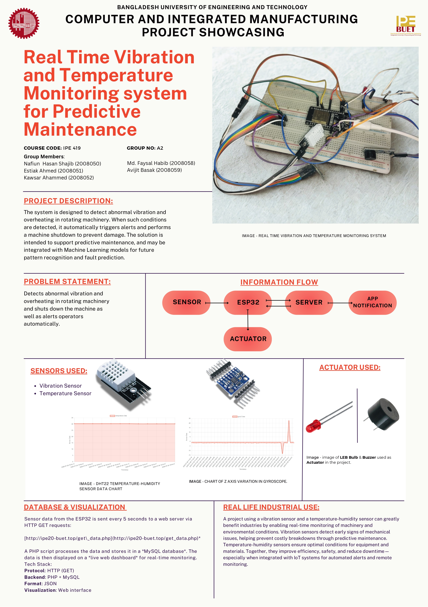

Team Leader: Nafiun Hasan (2008050)
Detects abnormal vibration and overheating in rotating machinery and shuts down the machine as well as alerts operators automatically.
| Device / Component | Quantity | Task / Function |
|---|---|---|
| MPU6050 Vibration Sensor | 1 | Measures vibration (acceleration & gyro) of machine |
| DHT22 Temperature Sensor | 1 | Monitors ambient or surface temperature |
| ESP32 | 1 | Main controller for data processing and cloud upload |
| Buzzer | 1 | Audible alarm on fault detection |
| LED Indicator | 1 | Visual fault indication |
| Relay / Shutdown Control | 1 | Stops machine in case of dangerous fault |

#include <WiFi.h>
#include <HTTPClient.h>
#include <Adafruit_MPU6050.h>
#include <Adafruit_Sensor.h>
#include <DHT.h>
#define DHTPIN 5
#define DHTTYPE DHT22
#define LED_PIN 27
#define BUZZER_PIN 14
const char* ssid = "Obito_Uchiha";
const char* password = "password";
const char* server = "http://ipe20-buet.top/get_data.php";
const char* group = "groupA2";
const char* pass = "passA2";
const char* telegram_url = "https://api.telegram.org/botXXXXXXXX/sendMessage";
const char* chat_id = "XXXXXXXX"; // Update with your real Telegram bot and chat ID
DHT dht(DHTPIN, DHTTYPE);
Adafruit_MPU6050 mpu;
float temperatureThreshold = 35.0;
float gyroThreshold = 0.05;
float accelThreshold = 4.0;
void setup() {
Serial.begin(115200);
dht.begin();
pinMode(LED_PIN, OUTPUT);
digitalWrite(LED_PIN, LOW);
pinMode(BUZZER_PIN, OUTPUT);
digitalWrite(BUZZER_PIN, LOW);
WiFi.begin(ssid, password);
Serial.print("Connecting to WiFi");
while (WiFi.status() != WL_CONNECTED) {
delay(500);
Serial.print(".");
}
Serial.println("\nWiFi connected");
if (!mpu.begin()) {
Serial.println("MPU6050 not found!");
while (1);
}
}
void loop() {
float temp = dht.readTemperature();
float hum = dht.readHumidity();
sensors_event_t acc, gyro, tempSensor;
mpu.getEvent(&acc, &gyro, &tempSensor);
Serial.printf("Temp: %.2f°C | Hum: %.2f%%\n", temp, hum);
Serial.printf("Acc: X=%.2f Y=%.2f Z=%.2f\n", acc.acceleration.x, acc.acceleration.y, acc.acceleration.z);
Serial.printf("Gyro: X=%.2f Y=%.2f Z=%.2f\n", gyro.gyro.x, gyro.gyro.y, gyro.gyro.z);
sendToServer("temperature", String(temp));
sendToServer("humidity", String(hum));
sendToServer("accX", String(acc.acceleration.x));
sendToServer("accY", String(acc.acceleration.y));
sendToServer("accZ", String(acc.acceleration.z));
sendToServer("gyroX", String(gyro.gyro.x));
sendToServer("gyroY", String(gyro.gyro.y));
sendToServer("gyroZ", String(gyro.gyro.z));
// Check for alerts
if (temp > temperatureThreshold ||
abs(gyro.gyro.x) > gyroThreshold ||
abs(gyro.gyro.y) > gyroThreshold ||
abs(gyro.gyro.z) > gyroThreshold ||
abs(acc.acceleration.x) > accelThreshold ||
abs(acc.acceleration.y) > accelThreshold ||
abs(acc.acceleration.z) > accelThreshold) {
triggerAlert(temp, gyro.gyro.x, gyro.gyro.y, gyro.gyro.z,
acc.acceleration.x, acc.acceleration.y, acc.acceleration.z);
}
delay(5000);
}
void sendToServer(const String& sensorName, const String& sensorData) {
if (WiFi.status() == WL_CONNECTED) {
HTTPClient http;
String url = String(server) + "?g=" + group + "&sn=" + sensorName + "&sd=" + sensorData + "&p=" + pass + "&format=json";
http.begin(url);
int httpCode = http.GET();
if (httpCode > 0) {
String payload = http.getString();
Serial.println("Server response: " + payload);
} else {
Serial.printf("HTTP error: %d\n", httpCode);
}
http.end();
} else {
Serial.println("WiFi not connected");
}
}
void triggerAlert(float temp, float gx, float gy, float gz, float ax, float ay, float az) {
Serial.println("Threshold exceeded!");
digitalWrite(LED_PIN, HIGH);
digitalWrite(BUZZER_PIN, HIGH);
delay(3000);
digitalWrite(LED_PIN, LOW);
digitalWrite(BUZZER_PIN, LOW);
String message = "ALERT!\nTemp: " + String(temp) + "°C\nGyroX: " + String(gx) +
"\nGyroY: " + String(gy) + "\nGyroZ: " + String(gz) +
"\nAccX: " + String(ax) + "\nAccY: " + String(ay) + "\nAccZ: " + String(az);
sendTelegramAlert(message);
}
void sendTelegramAlert(String message) {
if (WiFi.status() == WL_CONNECTED) {
HTTPClient http;
String encodedMessage = urlEncode(message);
String fullUrl = String(telegram_url) + "?chat_id=" + chat_id + "&text=" + encodedMessage;
http.begin(fullUrl);
int httpCode = http.GET();
if (httpCode > 0) {
String response = http.getString();
Serial.println("Telegram response: " + response);
} else {
Serial.printf("Telegram send failed: %d\n", httpCode);
}
http.end();
} else {
Serial.println("WiFi not connected");
}
}
String urlEncode(const String &str) {
String encoded = "";
char c;
char code0, code1;
for (int i = 0; i < str.length(); i++) {
c = str.charAt(i);
if (isalnum(c)) {
encoded += c;
} else {
code1 = (c & 0xf) + '0';
if ((c & 0xf) > 9) code1 = (c & 0xf) - 10 + 'A';
code0 = ((c >> 4) & 0xf) + '0';
if (((c >> 4) & 0xf) > 9) code0 = ((c >> 4) & 0xf) - 10 + 'A';
encoded += '%';
encoded += code0;
encoded += code1;
}
}
return encoded;
}